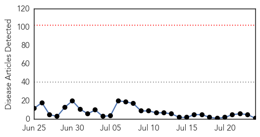
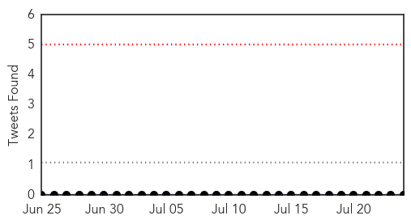
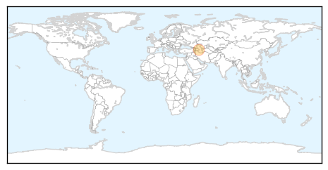
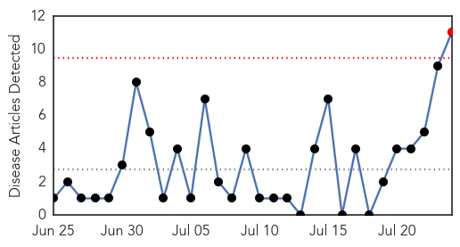

MERS
30-Day Web Trend
0 alerts, 0 warnings

30-Day Twitter Trend
0 alerts, 0 warnings

Article Locations
Article Confidences

Top Articles:
Top Tweets:
- 0.726
- AFD Blog `@WHO MERS Update – Saudi Arabia July 24th' MERS-CoV http://t.co/CxxEcggfTk
Hepatitis
30-Day Web Trend
1 alerts, 0 warnings

30-Day Twitter Trend
1 alerts, 0 warnings

Article Locations

Article Confidences

Top Articles:
- 0.831
- World Health Organization calls for urgent action to curb hepatitis — MercoPress
- 0.816
- WHO Unsafe Injections Major Cause of Hepatitis Death
- 0.812
- Unsafe injections major cause of Hepatitis death: WHO
- 0.806
- Screening camp for killer Hepatitis from July 29
- 0.724
- Hepatitis B among children plummets
- 0.709
- Malaria vaccine gets regulatory nod
- 0.669
- First Malaria Vaccine Gains Recommendation After 28-Year Odyssey
- 0.616
- Rural docs want looser rules for Hepatitis C treatment
- 0.610
- Malaria vaccine gets regulatory nod
- 0.606
- Malaria vaccine gets regulatory nod
- 0.519
- Hepatitis spread causes concern in lead up to health week
Top Tweets:
-
No tweets found for Jul 24, 2015